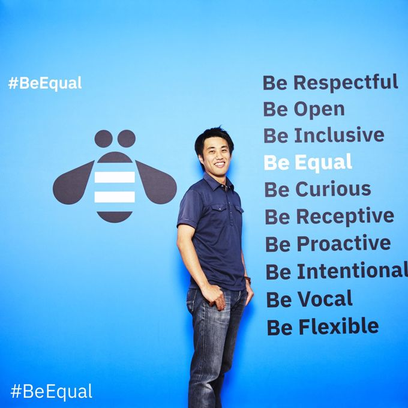

Watson Assistant×Slack Botでリモートで働く社員を繋ぐ
自己紹介

エンジニアの幸せを目指すEC特化型スタートアップ、
株式会社ジョーレンのエンジニア。
現在は新サービスの企画・営業や、EC-CUBEを利用したWebアプリケーション開発に従事しています。また、Watsonの開発の容易さとAPIの充実ぶりに魅せられ、WatsonとWebアプリを使った連携ツールを作ったりしてます。
2020年 IBM Champion。また、IBM Cloud User Group(通称:BMXUG)運営の一員です。
SlackBotも社員の一員！
弊社で愛されるSlackbot
弊社には、社員に愛されるSlackbotがおります。その名も「加湿さん」！ そもそもの由来は、オフィス環境が乾かない様に、社員に定期的な加湿器への給水をリマインドするものだったのですが、現在は社員の心も潤す存在に進化しています。
どれくらい愛でられているかというと、、、
独身男性社員にナンパされてしまうくらいの人気ぶりですw

もちろん
女性社員からも、それなりに好評の様です。

システム構成
さて、このSlack上での会話ですが、Watson Assistantを使って会話を成立させています。 システムのイメージとしてはこの様な感じです。

WatsonとSlackの連携は
ノンコーディングでできる！
一見、どうやってやるの？ となりそうですが、連携自体はノンコーディングでOKです。 IBM DAの戸倉さんが、【Watson×Slack】Watson Assistantを連携させたSlack botを開発する方法 (ノンコーディング編)で紹介しているので参考にしてみてください。
今回は、SlackとWatson Assistantが連携している前提で、このbotの育て方をご紹介します。
手始めの一般会話ができるまで
Content Catalogを使って一般会話の意図を理解できる様にする。
Watson Assistantを起動して、該当のbotを開き、Content Catalogを選択します。ここでは、「よくある一般的なトピック」として一般を選択(Add to Skill)します。

カタログを選ぶとこうなります。
挨拶や、あなたは誰？というIntentが色々と登録されています。

Dialogで応答を定義する
上記で定義されたIntentに対して、どの様な返答を返すかはあなた次第です。愛されそうな返事を定義しましょう。
Dialogを選択して、Add to Nodeを押します。

回答の定義の仕方
ここでは、「こんにちは」など、挨拶がされたときの返事を定義しています。

簡単に会話が定義できます！
これだけで、挨拶されたら挨拶を返すbotの完成です。同じ要領で、既にContent Catalogで取り込んだIntentへの返事を定義していきましょう。
ユーザーの目的を汲み取って
返事をしてみる
「〜をしたよ！だから、褒めて欲しい」という
要求に答える(Entityを使う)
ある程度、Intentを使ったやりとりができてきたそんなある日、とある社員が「掃除をしたよ！(だから褒めて)」とbotに要求してきました。 この場合、通り一辺倒な褒め言葉では「愛されるbot」にはなれません。「掃除をしたこと」に対する「褒め」を用意しましょう。イメージとしては、こんな感じです。

Entityを使おう
さて、この様に「〜を」というユーザーの「目的語」(この場合は掃除)を捉えるために、Watson AssistantにはEntityという概念があります。
Entityを定義する
Entity → My entities から Create entityを押して Entityの定義をします。

登録内容は至って簡単で、今回の「掃除」がキーワードであれば、それを表しそうな言葉を入れていきましょう。

Entityを踏まえてDialogで返答を定義する
これは少し、コツが必要です。
「褒めて欲しい」という意図をまずは判定する。
まずは、「褒めて欲しい」という意図(Inent)を判定します。ただ、この時点では「何に対して」という情報が不足しているため、回答が確定できません。この場合は、回答を定義せずに、次の処理(Skip User Input and evaluate child nodes)とします。
下記の様なイメージですね。

Child NodeでEntityを判定して適切な答えを返す
上記のNodeを選択した状態で、Add Child Nodeを押します。

ここでは、既に「褒めて欲しい」というIntentは判定済みですので、Entityだけを判定します。この様なイメージです。

これで、ユーザが褒めて欲しい対象によって、
返答を切り替えることができる様になりました。
答えられなかった質問を
教育する。
IntentやEntityの判定を調整する。
愛されてくる様になると、本当に様々なタチの悪い呼びかけがbotにされる様になります。こうすると、Intentで判定できなかったり、誤った返答をしてしまうケースが出てきます。これが頻発すると、愛され度も台無しです。

ということで、回答をメンテナンスしていきます！
メンテナンスをする
Analytics → User Conversationsで今まで話しかけられた内容に対して、どの様なIntentやEntityと判定したのか見ることができます。

修正方法
右側の鉛筆マークをクリックして正しいIntentやEntityを定義してあげましょう。ちなみに、どのIntentにも該当しなった場合は「Irrelevant」なります。必要に応じて、新しいIntentを用意してあげましょう。
修正後は、Saveをクリックしてください。

これを繰り返すことで、どんどんと、Watson Assistantは学習を重ね、ユーザーが喜ぶ返事をどんどんと返すことができる様になります。
答えられなかった時のリアクションも意外と大事
ちなみに、ちょっと困った風の返事をしたりすると、(弊社では)喜ばれます。

何にも該当しなかった場合の定義方法
この様にするためには、anything_elseという判定を活用しましょう。これは、どれにも当てはまらなかったら、という意図です。何も定義しないと、IntentやEntityに該当しない質問が来た時に、botが黙った様に感じられてしまうので、判定とセットにして忘れずに定義しましょう。

FaaSを使って、外部とのやりとりをする
(例：天気予報)
簡単な外部サービスとの連携
Watson Assistantは外部サービスとの連携も非常に簡単になりました。天気予報など、予め、返答を定義できない問いかけに対して、非常に有効です。また、この機能を使えばDBへ話しかけられた内容を保管する、なんてこともできちゃいます！ 今回は、天気予報を例に書いていきます。アーキテクチャはこの様なイメージです。

Webhooksを設定する
Options→Webhooksを選択します。ここに呼び出すAPIのURLやAuthorizationヘッダ情報(IDやパスワード)を定義するだけです。

定義したWebhookをDialogから呼び出す
DialogのNodeの右上の歯車マークをクリックして、WebhooksをONにする

下記の要領で定義をしていきます。
- APIに渡すパラメータを定義します。(今回は天気予報なので、Parameterにはlocationを設定しています。)
- Return variable(戻り値の名前)を設定します。
- Return variableがあった時の返事を定義します。今回は下記の様に定義しました
- そうですね。。。今日の “@location” の天気は “$webhook_result.response.result.forecast” みたいですよ！
anything_elseを使って、呼び出しに失敗した時の定義をします。
ダイアログの見た目

こうすると、呼び出しに成功した時には以下の様な返答が返ってきます。

良い感じですね。以前は、Webhookの呼び出しはJSONで定義しなければ行けなかったのですが、、、本当に簡単になりました。
ちなみに、Weather Company Dataで天気予報を取得するときは、IBM Cloud Functionsを利用しています。
取得コードは下記の通りです。(Node.js)
/**
*
* main() このアクションを呼び出すときに実行されます
*
* @param Cloud Functions アクションは 1 つのパラメーターを受け入れます。このパラメーターは JSON オブジェクトでなければなりません。
*
* @return このアクションの出力。この出力は、JSON オブジェクトでなければなりません。
*
*/
var request = require('request');
var main = function(params){
var options = {
json:true,
auth:{
'user':'XXXXXXXX-XXXX-XXXX-XXXX-XXXXXXXXXXXX',
'password':'XXXXXXXX'
}
}
return new Promise(function(resolve, reject) {
//名称から緯度と経度を取得。
options.url = 'https://twcservice.au-syd.mybluemix.net/api/weather/v3/location/search?query=' + encodeURI(params.location) + '&language=ja-JP';
request.get(options, function (error, response, body) {
if (!error && response.statusCode == 200) {
var lat = body.location.latitude[0];
var lng = body.location.longitude[0];
//天気予報をゲット！
options.url = 'https://twcservice.au-syd.mybluemix.net/api/weather/v1/geocode/' + lat + '/' + lng + '/forecast/daily/3day.json?language=ja-JP';
request.get(options, function (error, response, body){
if (!error && response.statusCode == 200) {
// narrativeは天気予報を文章で教えてくれる
var forecast = body.forecasts[1].narrative;
// 音声出力(TextToSpeech)に合わせて、記号をひらがなに変換
forecast = forecast.replace(/～/g,"から");
forecast = forecast.replace(/-/g,"マイナス");
resolve({"forecast":forecast,"statusCode":response.statusCode});
}else{
reject();
}
})
} else {
reject();
}
});
})
}
まとめ
リモートワークをしていると、ちょっとした雑談相手が欲しい時ってありますよね。
無駄に話しかけることができて、成長を感じられるSlackbotは、社内のコミュニケーションの手助けにもなりますし、何よりも機械学習に慣れる良い機会になります！
IBM CloudはLite Planという永年無料のプランがあり、このプランでも十分にSlackbotは楽しめるので、ぜひ、トライしてみてくださいね！